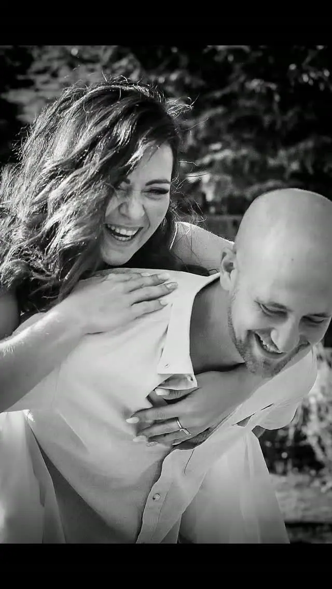
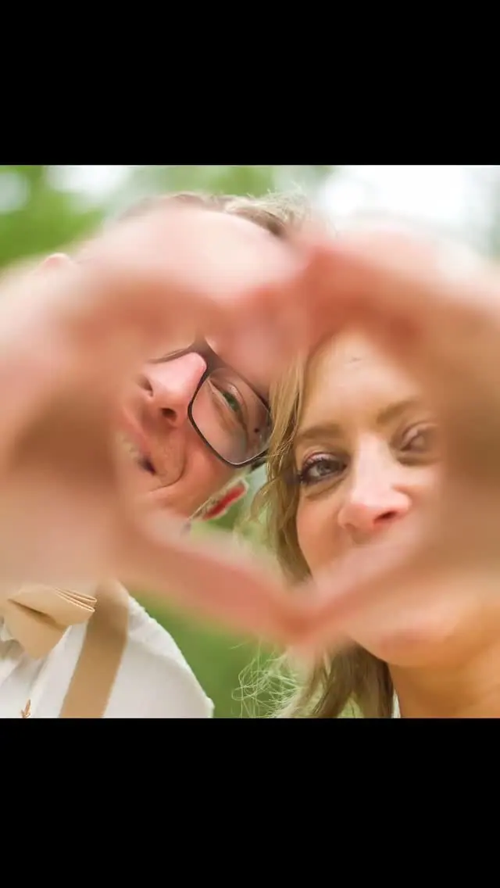

Svatební fotografie
Přirozené a emotivní svatební fotky z celého dne, od příprav až po večerní oslavu. Fotím po severní i jižní Moravě a za vámi dojedu kamkoliv.

Svatební fotograf
Jmenuji se Lubomír Kirman a jsem svatební fotograf z Ostravy a Olomouce. Fotím přirozené a emotivní svatby po celé severní i jižní Moravě, a když je potřeba, dojedu kamkoliv.
Zeptat se na termín
Přirozené a emotivní svatební fotky z celého dne, od příprav až po večerní oslavu. Fotím po severní i jižní Moravě a za vámi dojedu kamkoliv.
Na svatbách mě nejvíc baví to, co se nedá naaranžovat. Smích, který vás přepadne uprostřed focení, pohled přes rameno, host, který se zrovna nedívá. Proto fotím přirozeně a nechávám den plynout po svém.
Hodně fotek si nechávám v černé a bílé, protože v nich vynikne emoce a výraz, ne barva ubrousků. Barvy ale samozřejmě nechávám tam, kde k atmosféře patří.
Pracuji hlavně v Ostravě, v Olomouci a po celé severní i jižní Moravě. Pokud se berete jinde, napište mi. Dojedu kamkoliv.
Napište mi termín a místo svatby. Ověřím, jestli mám volno, a pošlu vám nabídku.
Probereme, jak si svůj den představujete, harmonogram a místa, kde budeme fotit.
Jsem s vámi a fotím nenápadně a přirozeně, aby emoce zůstaly opravdové.
Fotky pečlivě vyberu a upravím, aby z nich byl ucelený příběh vašeho dne.
Nejčastěji v Ostravě, v Olomouci a po celé severní i jižní Moravě. Za svatbou ale dojedu kamkoliv.
Obojí. Černobílou volím tam, kde vynikne emoce, barevné fotky tam, kde k atmosféře patří barvy.
Nemusíte. Fotím přirozeně, takže stačí být sami sebou a užívat si den.
Cena záleží na délce focení a místě svatby. Napište mi termín a pošlu vám nabídku na míru.